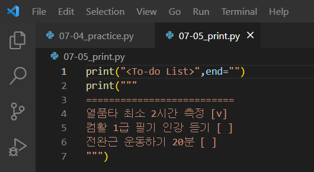

✔ 오늘의 과제 : 출력 프로그램 만들기 ✔
📝 개념 정리
- 문자열 코드 작성 시, 큰따옴표 또는 작은따옴표로 감싼다.
- 쉼표를 사용하면 띄어쓰기를 포함하여 출력한다.
- print()문 내에서 따옴표 3쌍을 사용하면 여러 줄을 출력할 수 있다.
- end 옵션은 출력문 마지막에 출력될 문자를 지정한다.
- sep 옵션은 구분된 문자열 사이에 구분자로 사용할 문자를 지정한다.
[코드]

- 한번의 print()로 여러 줄을 출력하는 코드도 작성해보았다.
[실행 결과]